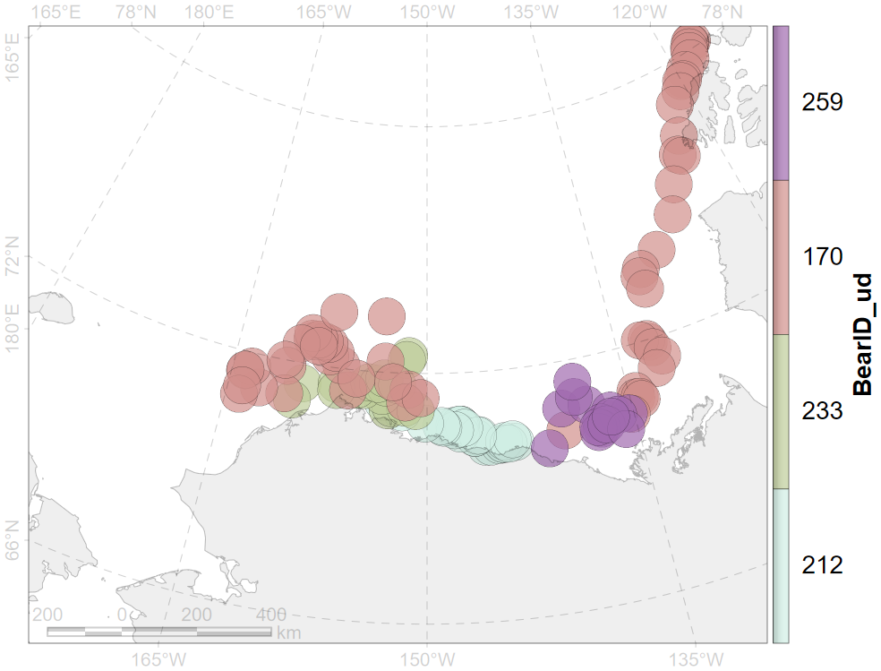

layout: true .toc.banner[ .shorttitle[ [ГИС аспирантура](break.html#home) ] ] --- name: home class: metadata customtitle middle left giphy .toc.sidebar.left-column[ .outline[ ## [Растровые и векторные данные ](#H3a17f) ## [Проекции ](#H3eb35) ] ] .toc.mainbar.right-column.scrollable[ .author[Никита Платонов] .institute[с.н.с. ИПЭЭ РАН] .title[ Основы работы с пространственными данными ] .subtitle[ ГИС технологии в биологических исследованиях ] .what[ Занятие 03 ] .where[ ] .when[ .updated[Обновлено: 2025-02-05 22:25] ] ] --- class: middle name: H3a17f .toc.sidebar.left-column[ .outline[ ## [Растровые и векторные данные ](#H3a17f).fg[] ### [Вектор ](#H3a17f).fg[].bg[] #### [Исходные данные ](#H0aedd) #### [Вместе ](#point-together) #### [Раздельно ](#point-separate) #### [\{geom\} vs MULTI\{geom\} ](#Ha44f7) ### [Растр ](#H3b31a) ## [Проекции ](#H3eb35) ] ] .toc.mainbar.right-column.scrollable[ .header.h3.broad[ Вектор .parent[.grand[Растровые и векторные данные]] ] .fixprecode[ + Геометрия (точка, линия, полигон) + Таблица с атрибутами, связанная с геометрией (один к одному) + Информация о проекции ] ] --- name: H0aedd .toc.sidebar.left-column[ .outline[ ## [Растровые и векторные данные ](#H3a17f).fg[] ### [Вектор ](#H3a17f).fg[] #### [Исходные данные ](#H0aedd) <span class="bullet bullet-active">[•](#H0aedd)</span><span class="bullet mslide9m">[•](#Ha5c44)</span>.fg[].bg[] #### [Вместе ](#point-together) #### [Раздельно ](#point-separate) #### [\{geom\} vs MULTI\{geom\} ](#Ha44f7) ### [Растр ](#H3b31a) ## [Проекции ](#H3eb35) ] ] .toc.mainbar.right-column.scrollable[ .header.h4.broad[ Исходные данные .parent[.grand[Вектор .grand[Растровые и векторные данные]]] ] .fixprecode[ Пример на основе данных <span class="cite hovertext" data-hover="Polar Bear Distribution and Habitat Resource Selection Data, Beaufort and Chukchi Seas, 1985-2016"><a name=cite-Durner2019_data></a>([Durner, 2019](#bib))</span>, используемых в работе <span class="cite hovertext" data-hover="Are polar bear habitat resource selection functions developed from 1985--1995 data still useful?"><a name=cite-Durner2019_RSF></a>([Durner et al., 2019](#bib))</span>. Исходные данные - локации белых медведей по данным спутниковой биотелеметрии. Фрагмент атрибутивной таблицы: .dummy-for-font-size[ | BearID_ud|DateTimeUTC_ud |season |period | coords.x1| coords.x2| |---------:|:---------------|:------|:------|---------:|---------:| | 244|10/1/2008 0:01 |gth |0716 | -147.985| 70.491| | 244|10/4/2008 2:01 |gth |0716 | -147.985| 70.491| | 244|10/7/2008 3:00 |gth |0716 | -147.984| 70.491| | 244|10/10/2008 4:00 |gth |0716 | -147.985| 70.491| | 244|10/13/2008 4:00 |gth |0716 | -147.985| 70.491| | 127|8/17/2006 0:00 |mlt |9606 | -150.414| 72.464| | 127|8/20/2006 16:01 |mlt |9606 | -150.967| 72.848| | 127|8/24/2006 16:00 |mlt |9606 | -154.550| 73.357| | 127|8/27/2006 16:00 |mlt |9606 | -155.652| 73.748| | 127|8/30/2006 16:00 |mlt |9606 | -156.683| 73.872| ] ] ] --- name: Ha5c44 .toc.sidebar.left-column[ .outline[ ## [Растровые и векторные данные ](#H3a17f).fg[] ### [Вектор ](#H3a17f).fg[] #### [Исходные данные ](#H0aedd) <span class="bullet bullet">[•](#H0aedd)</span><span class="bullet bullet-active">[•](#Ha5c44)</span>.fg[].bg[] #### [Вместе ](#point-together) #### [Раздельно ](#point-separate) #### [\{geom\} vs MULTI\{geom\} ](#Ha44f7) ### [Растр ](#H3b31a) ## [Проекции ](#H3eb35) ] ] .toc.mainbar.right-column.scrollable[ .header.h4.broad[ Исходные данные .parent[.grand[Вектор .grand[Растровые и векторные данные]]] ] .fixprecode[ <img src="assets/kernel/source-847.png" width="1330" height="700" style="display: block; margin: auto auto auto 0;" /> ] ] --- name: point-together .toc.sidebar.left-column[ .outline[ ## [Растровые и векторные данные ](#H3a17f).fg[] ### [Вектор ](#H3a17f).fg[] #### [Исходные данные ](#H0aedd) #### [Вместе ](#point-together).fg[] ##### [POINT (точки)](#point-together).fg[].bg[] ##### [LINESTRING (линии)](#line-together) ##### [POLYGON (полигоны)](#poly-together) #### [Раздельно ](#point-separate) #### [\{geom\} vs MULTI\{geom\} ](#Ha44f7) ### [Растр ](#H3b31a) ## [Проекции ](#H3eb35) ] ] .toc.mainbar.right-column.scrollable[ .header.h5.broad[ POINT (точки) .parent[.grand[Вместе .grand[Вектор] .grand[Растровые и векторные данные]]] ] .fixprecode[ Выборка по четырем случайным особям. См. ["раздельно"](#point-separate). ] ] --- name: line-together .toc.sidebar.left-column[ .outline[ ## [Растровые и векторные данные ](#H3a17f).fg[] ### [Вектор ](#H3a17f).fg[] #### [Исходные данные ](#H0aedd) #### [Вместе ](#point-together).fg[] ##### [POINT (точки)](#point-together) ##### [LINESTRING (линии)](#line-together).fg[].bg[] ##### [POLYGON (полигоны)](#poly-together) #### [Раздельно ](#point-separate) #### [\{geom\} vs MULTI\{geom\} ](#Ha44f7) ### [Растр ](#H3b31a) ## [Проекции ](#H3eb35) ] ] .toc.mainbar.right-column.scrollable[ .header.h5.broad[ LINESTRING (линии) .parent[.grand[Вместе .grand[Вектор] .grand[Растровые и векторные данные]]] ] .fixprecode[ <img src="assets/kernel/combine-lines-847.png" width="1330" height="700" style="display: block; margin: auto auto auto 0;" /> Линии - соединение точек. См. [раздельно](#line-separate). ] ] --- name: poly-together .toc.sidebar.left-column[ .outline[ ## [Растровые и векторные данные ](#H3a17f).fg[] ### [Вектор ](#H3a17f).fg[] #### [Исходные данные ](#H0aedd) #### [Вместе ](#point-together).fg[] ##### [POINT (точки)](#point-together) ##### [LINESTRING (линии)](#line-together) ##### [POLYGON (полигоны)](#poly-together).fg[].bg[] #### [Раздельно ](#point-separate) #### [\{geom\} vs MULTI\{geom\} ](#Ha44f7) ### [Растр ](#H3b31a) ## [Проекции ](#H3eb35) ] ] .toc.mainbar.right-column.scrollable[ .header.h5.broad[ POLYGON (полигоны) .parent[.grand[Вместе .grand[Вектор] .grand[Растровые и векторные данные]]] ] .fixprecode[  Полигоны - буфер вокруг точек. См. [раздельно](#poly-separate). ] ] --- name: point-separate .toc.sidebar.left-column[ .outline[ ## [Растровые и векторные данные ](#H3a17f).fg[] ### [Вектор ](#H3a17f).fg[] #### [Исходные данные ](#H0aedd) #### [Вместе ](#point-together) #### [Раздельно ](#point-separate).fg[] ##### [POINT (точки)](#point-separate).fg[].bg[] ##### [LINESTRING (линии)](#line-separate) ##### [POLYGON (полигоны)](#poly-separate) #### [\{geom\} vs MULTI\{geom\} ](#Ha44f7) ### [Растр ](#H3b31a) ## [Проекции ](#H3eb35) ] ] .toc.mainbar.right-column.scrollable[ .header.h5.broad[ POINT (точки) .parent[.grand[Раздельно .grand[Вектор] .grand[Растровые и векторные данные]]] ] .fixprecode[ <img src="assets/kernel/separate-points-847.png" width="1330" height="700" style="display: block; margin: auto auto auto 0;" /> См [вместе](#point-together). <!-- Отображение локаций для каждой особи в отдельной панели. --> ] ] --- name: line-separate .toc.sidebar.left-column[ .outline[ ## [Растровые и векторные данные ](#H3a17f).fg[] ### [Вектор ](#H3a17f).fg[] #### [Исходные данные ](#H0aedd) #### [Вместе ](#point-together) #### [Раздельно ](#point-separate).fg[] ##### [POINT (точки)](#point-separate) ##### [LINESTRING (линии)](#line-separate).fg[].bg[] ##### [POLYGON (полигоны)](#poly-separate) #### [\{geom\} vs MULTI\{geom\} ](#Ha44f7) ### [Растр ](#H3b31a) ## [Проекции ](#H3eb35) ] ] .toc.mainbar.right-column.scrollable[ .header.h5.broad[ LINESTRING (линии) .parent[.grand[Раздельно .grand[Вектор] .grand[Растровые и векторные данные]]] ] .fixprecode[ <img src="assets/kernel/separate-lines-847.png" width="1330" height="700" style="display: block; margin: auto auto auto 0;" /> См [вместе](#line-together). ] ] --- name: poly-separate .toc.sidebar.left-column[ .outline[ ## [Растровые и векторные данные ](#H3a17f).fg[] ### [Вектор ](#H3a17f).fg[] #### [Исходные данные ](#H0aedd) #### [Вместе ](#point-together) #### [Раздельно ](#point-separate).fg[] ##### [POINT (точки)](#point-separate) ##### [LINESTRING (линии)](#line-separate) ##### [POLYGON (полигоны)](#poly-separate).fg[].bg[] #### [\{geom\} vs MULTI\{geom\} ](#Ha44f7) ### [Растр ](#H3b31a) ## [Проекции ](#H3eb35) ] ] .toc.mainbar.right-column.scrollable[ .header.h5.broad[ POLYGON (полигоны) .parent[.grand[Раздельно .grand[Вектор] .grand[Растровые и векторные данные]]] ] .fixprecode[ <img src="assets/kernel/separate-polygons-847.png" width="1330" height="700" style="display: block; margin: auto auto auto 0;" /> См [вместе](#poly-together). ] ] --- class: middle name: Ha44f7 .toc.sidebar.left-column[ .outline[ ## [Растровые и векторные данные ](#H3a17f).fg[] ### [Вектор ](#H3a17f).fg[] #### [Исходные данные ](#H0aedd) #### [Вместе ](#point-together) #### [Раздельно ](#point-separate) #### [\{geom\} vs MULTI\{geom\} ](#Ha44f7).fg[].bg[] ##### [POINT vs MULTIPOINT: ](#H7bbc7) ### [Растр ](#H3b31a) ## [Проекции ](#H3eb35) ] ] .toc.mainbar.right-column.scrollable[ .header.h4.broad[ \{geom\} vs MULTI\{geom\} .parent[.grand[Вектор .grand[Растровые и векторные данные]]] ] .fixprecode[ В каждой строке таблицы атрибутов есть поле геометрии В поле геометрии представлена информация, как географически представлена запись (точка, линия, полигон). В поле геометрии может храниться список, то есть, несколько пространственных точек, несколько линий, несколько полигонов. В этом случае тип данных (по геометрии) будет множественным (MULTIPOINT, MULTILINESTRING, MULTIPOLYGON). ] ] --- name: H7bbc7 .toc.sidebar.left-column[ .outline[ ## [Растровые и векторные данные ](#H3a17f).fg[] ### [Вектор ](#H3a17f).fg[] #### [Исходные данные ](#H0aedd) #### [Вместе ](#point-together) #### [Раздельно ](#point-separate) #### [\{geom\} vs MULTI\{geom\} ](#Ha44f7).fg[] ##### [POINT vs MULTIPOINT: ](#H7bbc7) <span class="bullet bullet-active">[•](#H7bbc7)</span><span class="bullet mslide25m">[•](#H92c4d)</span>.fg[].bg[] ### [Растр ](#H3b31a) ## [Проекции ](#H3eb35) ] ] .toc.mainbar.right-column.scrollable[ .header.h5.broad[ POINT vs MULTIPOINT: .parent[.grand[#### [\{geom\} vs MULTI\{geom\} ](#Ha44f7) .grand[Вектор] .grand[Растровые и векторные данные]]] ] .fixprecode[ POINT .pulling[ .pull-left-30[ |id |BearID_ud | |:--------|:---------| |max:0716 |212 | |max:0716 |233 | |max:0716 |233 | |max:0716 |170 | |max:0716 |170 | |max:0716 |259 | ] .pull-right-70[ <img src="assets/kernel/sinlge-point-847.png" width="1330" height="700" style="display: block; margin: auto auto auto 0;" /> ] ] ] ] --- name: H92c4d .toc.sidebar.left-column[ .outline[ ## [Растровые и векторные данные ](#H3a17f).fg[] ### [Вектор ](#H3a17f).fg[] #### [Исходные данные ](#H0aedd) #### [Вместе ](#point-together) #### [Раздельно ](#point-separate) #### [\{geom\} vs MULTI\{geom\} ](#Ha44f7).fg[] ##### [POINT vs MULTIPOINT: ](#H7bbc7) <span class="bullet bullet">[•](#H7bbc7)</span><span class="bullet bullet-active">[•](#H92c4d)</span>.fg[].bg[] ### [Растр ](#H3b31a) ## [Проекции ](#H3eb35) ] ] .toc.mainbar.right-column.scrollable[ .header.h5.broad[ POINT vs MULTIPOINT: .parent[.grand[#### [\{geom\} vs MULTI\{geom\} ](#Ha44f7) .grand[Вектор] .grand[Растровые и векторные данные]]] ] .fixprecode[ MULTIPOINT .pulling[ .pull-left-30[ |id |BearID_ud | npt| |:--------|:---------|---:| |max:0716 |170 | 2| |max:0716 |212 | 1| |max:0716 |233 | 2| |max:0716 |259 | 1| ] .pull-right-70[ <img src="assets/kernel/multi-point-847.png" width="1330" height="700" style="display: block; margin: auto auto auto 0;" /> ] ] ] ] --- class: middle name: H3b31a .toc.sidebar.left-column[ .outline[ ## [Растровые и векторные данные ](#H3a17f).fg[] ### [Вектор ](#H3a17f) ### [Растр ](#H3b31a).fg[].bg[] #### [Исходные данные ](#Ha1958) #### [Псевдоцвета ](#H5dd5c) #### [Размер ячейки ](#Hb4a71) #### [Категории ](#Hf5c90) ## [Проекции ](#H3eb35) ] ] .toc.mainbar.right-column.scrollable[ .header.h3.broad[ Растр .parent[.grand[Растровые и векторные данные]] ] .fixprecode[ + Сетка + Размер ячейки + Пространственный охват (минимальные и максимальные значение по обоим осям) + Число стобцов и строк + Информация о проекции + Данные (многослойные) в числовых значениях + Категории + Таблица цветов ] ] --- name: Ha1958 .toc.sidebar.left-column[ .outline[ ## [Растровые и векторные данные ](#H3a17f).fg[] ### [Вектор ](#H3a17f) ### [Растр ](#H3b31a).fg[] #### [Исходные данные ](#Ha1958).fg[].bg[] #### [Псевдоцвета ](#H5dd5c) #### [Размер ячейки ](#Hb4a71) #### [Категории ](#Hf5c90) ## [Проекции ](#H3eb35) ] ] .toc.mainbar.right-column.scrollable[ .header.h4.broad[ Исходные данные .parent[.grand[Растр .grand[Растровые и векторные данные]]] ] .fixprecode[ <img src="assets/kernel/raster-b0-847.png" width="1330" height="700" style="display: block; margin: auto auto auto 0;" /> Участок обитания (кёрнел) <span class="cite hovertext" data-hover="Kernel Methods for Estimating the Utilization Distribution in Home-Range Studies"><a name=cite-Worton1989></a>([Worton, 1989](#bib))</span> на основе данных <span class="cite hovertext" data-hover="Polar Bear Distribution and Habitat Resource Selection Data, Beaufort and Chukchi Seas, 1985-2016">([Durner, 2019](#bib))</span>. ] ] --- name: H5dd5c .toc.sidebar.left-column[ .outline[ ## [Растровые и векторные данные ](#H3a17f).fg[] ### [Вектор ](#H3a17f) ### [Растр ](#H3b31a).fg[] #### [Исходные данные ](#Ha1958) #### [Псевдоцвета ](#H5dd5c).fg[].bg[] #### [Размер ячейки ](#Hb4a71) #### [Категории ](#Hf5c90) ## [Проекции ](#H3eb35) ] ] .toc.mainbar.right-column.scrollable[ .header.h4.broad[ Псевдоцвета .parent[.grand[Растр .grand[Растровые и векторные данные]]] ] .fixprecode[ <img src="assets/kernel/raster-b1-847.png" width="1330" height="700" style="display: block; margin: auto auto auto 0;" /> Для отображения используются псевдоцвета, градации серого, RGB ] ] --- name: Hb4a71 .toc.sidebar.left-column[ .outline[ ## [Растровые и векторные данные ](#H3a17f).fg[] ### [Вектор ](#H3a17f) ### [Растр ](#H3b31a).fg[] #### [Исходные данные ](#Ha1958) #### [Псевдоцвета ](#H5dd5c) #### [Размер ячейки ](#Hb4a71).fg[].bg[] #### [Категории ](#Hf5c90) ## [Проекции ](#H3eb35) ] ] .toc.mainbar.right-column.scrollable[ .header.h4.broad[ Размер ячейки .parent[.grand[Растр .grand[Растровые и векторные данные]]] ] .fixprecode[ <img src="assets/kernel/raster-b3-847.png" width="1330" height="700" style="display: block; margin: auto auto auto 0;" /> В отличие от вектора, в растрах жестко заданы характеристики пространственной сетки ] ] --- name: Hf5c90 .toc.sidebar.left-column[ .outline[ ## [Растровые и векторные данные ](#H3a17f).fg[] ### [Вектор ](#H3a17f) ### [Растр ](#H3b31a).fg[] #### [Исходные данные ](#Ha1958) #### [Псевдоцвета ](#H5dd5c) #### [Размер ячейки ](#Hb4a71) #### [Категории ](#Hf5c90).fg[].bg[] ## [Проекции ](#H3eb35) ] ] .toc.mainbar.right-column.scrollable[ .header.h4.broad[ Категории .parent[.grand[Растр .grand[Растровые и векторные данные]]] ] .fixprecode[ Растры позволяют оперировать с номинальными шкалами ] ] --- class: middle name: H3eb35 .toc.sidebar.left-column[ .outline[ ## [Растровые и векторные данные ](#H3a17f) ## [Проекции ](#H3eb35).fg[].bg[] ] ] .toc.mainbar.right-column.scrollable[ .header.h2.broad[ Проекции ] .fixprecode[ В QGIS и R используются следующие нотации PROJ <span class="cite hovertext" data-hover="PRØJ coordinate transformation software library"><a name=cite-PROJ></a>([PROJ contributors, 2022](#bib))</span>. + EPSG + WKT + PRO4 string ] ] --- class: notable middle inverse picsum .note[ .pulling[ .pull-left-55.font90[ ## Домашнее задание на [27 февраля 2025 г.](index.html#deadline1) В QGIS на основе данных Natural Earth 1:10m cоздать картооснову, ориентируясь на территорию, охватывающую Карелию и Мурманскую области. Желательно включить административные границы, батиметрию и контуры высот. Экспортировать через Export Image или Print Layout два изображения, соответствующих русскоязычным журнальным требованиям, с различным пространственным охватом: 1) только Кольский п-ов, 2) вместе Карелия и Мурманская обл., 3) свой район работ для описания изучаемой территории в разделе «Методы» 4) свой район работ для использования в качестве подложки для «Результатов» ] .pull-right-45[ <img src="assets/lesson03/homework.png" width="1330" height="600" bound style="display: block; margin: auto auto auto 0;" /> ] ] ] --- name: beforefinalizing name: bib class: notable .footnote.small.bibliography[ <div class="backtoshow"><a href="javascript:window.history.back();">↩</a></div> **** <a name=bib-Durner2019_data></a>[Durner, G. M.](#bib) (2019). _Polar Bear Distribution and Habitat Resource Selection Data, Beaufort and Chukchi Seas, 1985-2016_. DOI: [10.5066/P9ZRJ3XU](https://doi.org/10.5066%2FP9ZRJ3XU). URL: [https://alaska.usgs.gov/products/data.php?dataid=246](https://alaska.usgs.gov/products/data.php?dataid=246). <a name=bib-Durner2019_RSF></a>[Durner, G. M., D. C. Douglas, and T. C. Atwood](#bib) (2019). "Are polar bear habitat resource selection functions developed from 1985-1995 data still useful?" In: _Ecology and Evolution_ 9.15, pp. 8625-8638. DOI: [10.1002/ece3.5401](https://doi.org/10.1002%2Fece3.5401). <a name=bib-PROJ></a>[PROJ contributors](#bib) (2022). _PRØJ coordinate transformation software library_. Open Source Geospatial Foundation. URL: [https://proj.org/](https://proj.org/). <a name=bib-Worton1989></a>[Worton, B. J.](#bib) (1989). "Kernel Methods for Estimating the Utilization Distribution in Home-Range Studies". In: _Ecology_ 70.1, pp. 164-168. ISSN: 1939-9170. DOI: [10.2307/1938423](https://doi.org/10.2307%2F1938423). ]